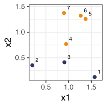
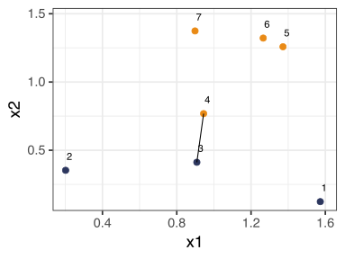
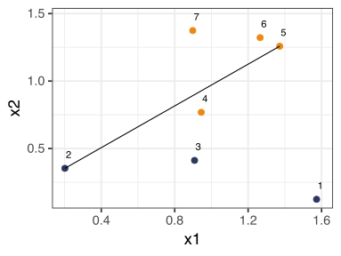
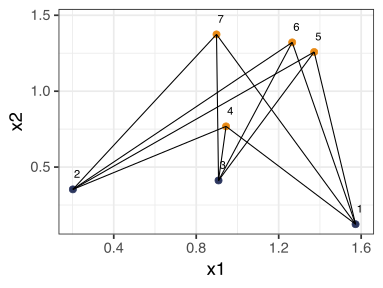
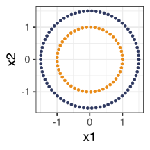
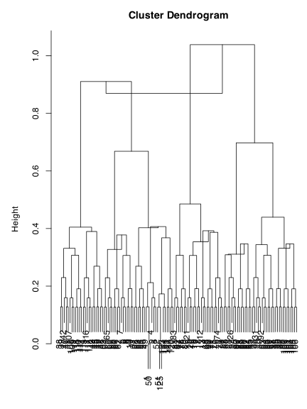

Final clustering assignments depend on the chosen initial cluster centers.
Hierarchical clustering
No need to choose the number of clusters before hand.
There is no random component (nor choice of starting point).
There is a catch: we need to choose a way to measure the distance between clusters, called the linkage.
Same data as the K-means example:
Code
# same data as K-means "Dumb example"heatmaply::ggheatmap(as.matrix(dist(rbind(X1, X2, X3))),showticklabels =c(FALSE, FALSE), hide_colorbar =TRUE)
Hierarchical clustering
Given the linkage, hierarchical clustering produces a sequence of clustering assignments.
At one end, all points are in their own cluster.
At the other, all points are in one cluster.
In the middle, there are nontrivial solutions.
Agglomeration

Given these data points, an agglomerative algorithm chooses a cluster sequence by combining the points into groups.
We can also represent the sequence of clustering assignments as a dendrogram
Cutting the dendrogram horizontally partitions the data points into clusters
Notation: Define \(x_1,\ldots, x_n\) to be the data
Let the dissimiliarities be \(d_{ij}\) between each pair \(x_i, x_j\)
At any level, clustering assignments can be expressed by sets \(G = \{ i_1, i_2, \ldots, i_r\}\) giving the indicies of points in this group. Define \(|G|\) to be the size of \(G\).
Linkage
The function \(d(G,H)\) that takes two groups \(G,\ H\) and returns the linkage distance between them.
Agglomerative clustering, given the linkage
Start with each point in its own group
Until there is only one cluster, repeatedly merge the two groups \(G,H\) that minimize \(d(G,H)\).
Important
\(d\) measures the distance between GROUPS.
Single linkage
In single linkage (a.k.a nearest-neighbor linkage), the linkage distance between \(G,\ H\) is the smallest dissimilarity between two points in different groups: \[d_{\textrm{single}}(G,H) = \min_{i \in G, \, j \in H} d_{ij}\]

Complete linkage
In complete linkage (i.e. farthest-neighbor linkage), linkage distance between \(G,H\) is the largest dissimilarity between two points in different clusters: \[d_{\textrm{complete}}(G,H) = \max_{i \in G,\, j \in H} d_{ij}.\]

Average linkage
In average linkage, the linkage distance between \(G,H\) is the average dissimilarity over all points in different clusters: \[d_{\textrm{average}}(G,H) = \frac{1}{|G| \cdot |H| }\sum_{i \in G, \,j \in H} d_{ij}.\]

Common properties
Single, complete, and average linkage share the following:
They all operate on the dissimilarities \(d_{ij}\).
This means that the points we are clustering can be quite general (number of mutations on a genome, polygons, faces, whatever).
Running agglomerative clustering with any of these linkages produces a dendrogram with no inversions
“No inversions” means that the linkage distance between merged clusters only increases as we run the algorithm.
In other words, we can draw a proper dendrogram, where the height of a parent is always higher than the height of either daughter.
(We’ll return to this again shortly)
Centroid linkage
Centroid linkage is relatively new. We need \(x_i \in \mathbb{R}^p\).
\(\overline{x}_G\) and \(\overline{x}_H\) are group averages
… very related to average linkage (and much, much faster)
However, it may introduce inversions.

Code
tt <-seq(0, 2* pi, len =50)tt2 <-seq(0, 2* pi, len =75)c1 <-tibble(x =cos(tt), y =sin(tt))c2 <-tibble(x =1.5*cos(tt2), y =1.5*sin(tt2))circles <-bind_rows(c1, c2)di <-dist(circles[, 1:2])hc <-hclust(di, method ="centroid")par(mar =c(.1, 5, 3, .1))plot(hc, xlab ="")

Shortcomings of some linkages
Single
👎 chaining — a single pair of close points merges two clusters. \(\Rightarrow\) clusters can be too spread out, not compact
Complete linkage
👎 crowding — a point can be closer to points in other clusters than to points in its own cluster.\(\Rightarrow\) clusters are compact, not far enough apart.
Average linkage
tries to strike a balance these
👎 Unclear what properties the resulting clusters have when we cut an average linkage tree.
👎 Results change with a monotone increasing transformation of the dissimilarities
Centroid linkage
👎 same monotonicity problem
👎 and inversions
All linkages
⁇ where do we cut?
Distances
Note how all the methods depend on the distance function